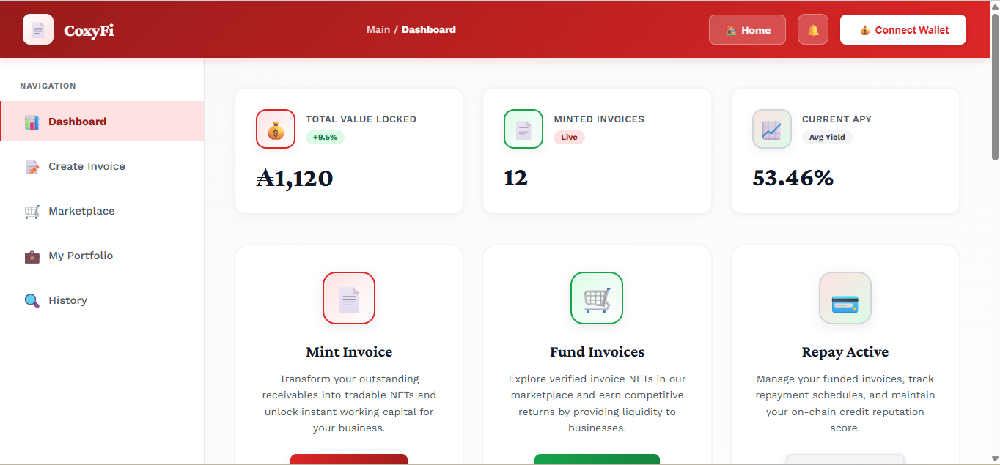

Coxyfi Manual
🧭 Dashboard Overview
After connection, users arrive at the main dashboard. This page is where invoices are listed, status messages appear, and key actions are launched.
Main Areas of the Dashboard
- Header: contains the brand title and the wallet connection button.
- Create Invoice card: used by issuers to upload invoice documents and mint invoice NFTs.
- Available Invoices section: shows open invoices ready for investor funding.
- Issuer Funded Invoices section: shows funded invoices that are waiting for repayment.
- Status panel: shows confirmations, errors, and progress updates.
Screenshot Placeholder

Suggested image: full dashboard annotated
Reading Status Messages
- Success messages confirm completed actions such as wallet connection or invoice creation.
- Warning messages usually mean a required input or precondition is missing.
- Failure messages should be reviewed before retrying the same action, especially if a transaction has already been submitted.